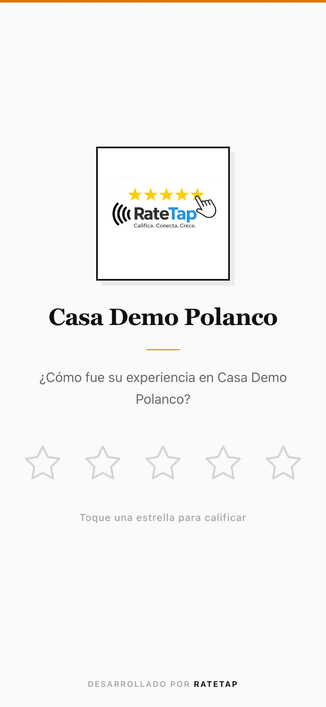
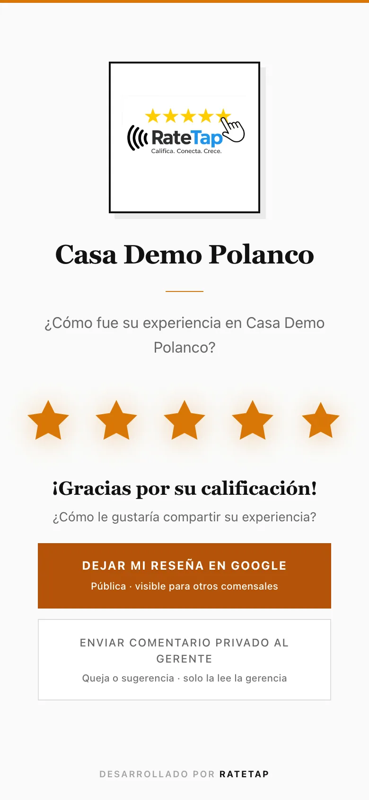

Tarjetas NFC o QR: reseñas en Google por mesero
Un QR por mesero. Funciona en cualquier celular. Google dice que más reseñas ayudan a tu posición en Maps.
MX$700/mes por sucursal · 30 días gratis
Del escaneo a la reseña en 3 pasos
Cada QR lleva el nombre de un mesero.
-
1
El mesero lo muestra
Con la cuenta, su QR personal.
-
2
El cliente escanea
Abre la cámara de su celular. Se abre la página sola.
-
3
Elige a dónde ir
Reseña en Google o mensaje privado al gerente.


¿Tarjeta NFC o QR?
Un QR por mesero funciona en cualquier celular.
| Qué hace | QR por mesero |
|---|---|
| Funciona en cualquier celular | |
| El cliente califica en unos 10 segundos | |
| Uno por mesero, con su nombre | |
| Sin descargar apps |
Resultados reales en 12 restaurantes
Cifras de RateTap, cada una con su fuente y fecha.
Preguntas frecuentes
30 días gratis, sin tarjeta de crédito. Después, MX$700/mes por sucursal. Sin costo de instalación.
Creas tu cuenta, agregas a tus meseros y cada uno recibe su QR al momento. No hay nada que instalar.
Todos los que tienen cámara. Los QR funcionan en cualquier celular, sin descargar ninguna app.
Uno por mesero. Cada QR se liga a un mesero en el tablero para ver su actividad.
Prueba RateTap 30 días gratis
Sin tarjeta de crédito. Después, MX$700/mes por sucursal. Sin costo de instalación.
Pruébalo 30 días gratis